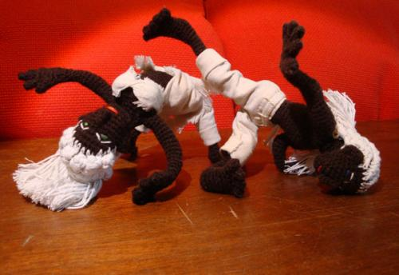
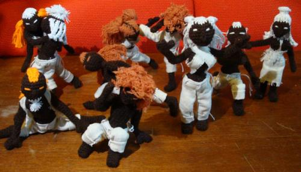

Оч.умелые капо-ручки…
На мой ДР моя ученица, подарила мне одну из таких куколок, все кто увидел ахали и охали от восторга. Поспрашивав историю происхождения куклы выяснил, что она сама их делает, когда время есть. Пообещала принести остальные показать и принесла целую «роту» капоэйристов. Теперь вот помогаю их продавать:


Куклы, вязанные крючком, скелет из неизвестного материала позволяет их гнуть как угодно и ставить в любые позы. Присутствуют первичные половые признаки, особенно хорошо видно если с мужиков снять штаны, а также носы. Большие куклы имеют еще уши и все пальцы.Возможно изготовление кукол под заказ по картинке, а больших даже по фотографии и возможно с узнаваемыми чертами лиц.
На правах рекламы (т.к. заливать все картинки сюда лениво):
Подробнее можно посмотреть на сайте Саботаж Капоэйра в разделе «Лавочка»